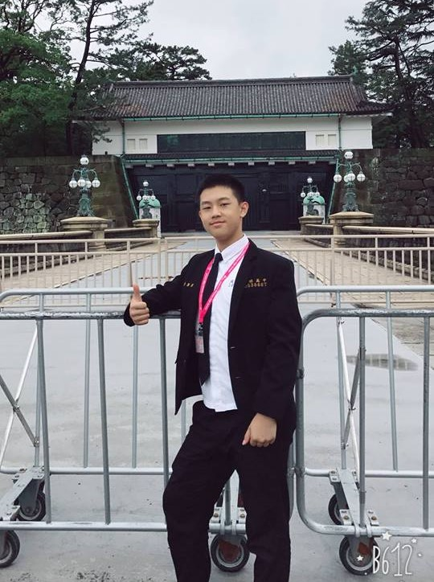

姓名：李騰澐
系級：電機工程學系112級
班級：F班
高中：台北市成功高級中學
興趣：跑步、游泳
興趣的緣起──步上機器人之路
國小時曾參加機器人營隊，這是我第一次學習撰寫程式，實做的過程中，點燃了我對研究機器人的興趣。之後我開始踏入設計和程式撰寫的世界，學習如何和機器人溝通，讓我漸漸瞭解原來機器經過適當的設計以及調整後，是可以變成幫助人們解決事情而且富有溫度的幫手。
我對於事物充滿了好奇心，喜歡利用科技動手實做，因此我將家中的電燈增加簡單的小裝置，再搭配感應器來讓手機可以控制開關，再搭配自動化的程式設計，以達到智慧居家的功能。這顆創造與改變的心讓我在觀察日常生活中看似平凡無奇的小事物時，都會更想去探索其背後發生的原因。
衛星科技──多元學習，延伸觸角
高二下的暑假，我參加衛星科學任務計畫，從全國的高中職學校中遴選出40名的學生參加訓練活動，這除了增加了我對於地球科學方面相關的知識外，還大幅的增加了實作能力。透過各項課題、科學任務，學習火箭是如何將重要的科學儀器送上外太空、了解航太以及衛星的專業知識。除了增廣見聞外，我再次了解到單打獨鬥的力量是不夠的，需要和組員們間互相合作，一起完成種種挑戰。這個計畫還讓我有難得的機會可以訪問太空中心、中科院，了解福衛五號衛星的酬載任務，透過自製的先進電離層探測儀，同時測量離子的密度、速度以及溫度等等，藉由多方的學習，獲得更多關於新技術以及許多地球科學的相關的知識，增加對於科學的興趣。最後，我還獲得前四分之一的推薦，可以參與國家太空中心今年度福衛七號在美國發射的參訪資格。（有放照片）
物理專題──水滴反跳，擁抱科學
在資優班的生活中，最重要的課題是分科的專題，專題可以讓我們學習到關於科學研究的精神及方法。例如學習如何獨立思考、如何和組員溝通以及合作，更重要的是如何分析問題以及設計實驗，並且在實驗的過程中，檢討發現錯誤，修正實驗的內容，有方法、耐心、細心、有條理地進行實驗。
我的專題內容是探討有關於水滴在落下至水面後所產生的反跳現象，透過高速錄影完整的紀錄水滴撞擊到反跳的整個過程，在分析的時候需要耐心的逐步拆解運動的過程，面對資料量龐大的高速錄影影片，要有耐心且仔細的分析水滴的型態，最後，發現了在不同的落下高度，會產生不同的反跳情形，在參加相關的競賽中，有機會與許多的教授面談，獲得寶貴的建議以及可以改進的地方，也獲得了臺北市107年度中等學校學生科學獎助計畫高中組物理科—三等獎，除此之外，我還學習到了進行科學研究的方法以及精神，而最重要的是合作的共識。
⇧Back to top